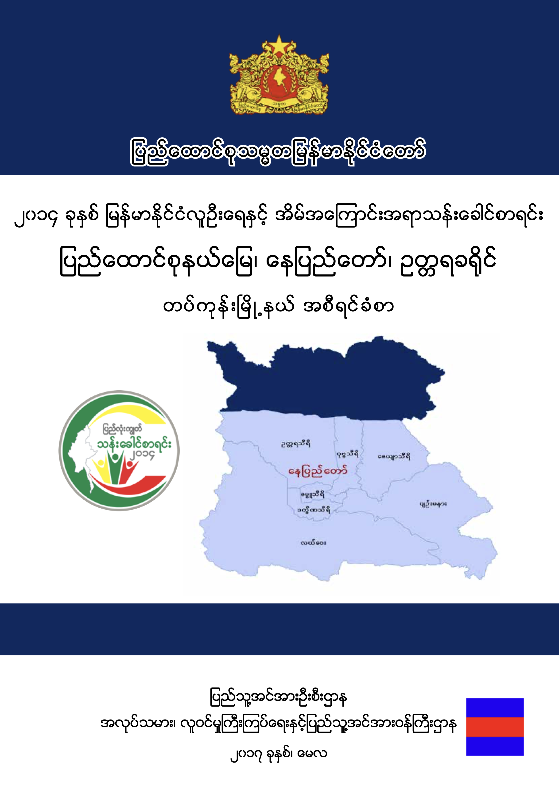

အမည်: ၂၀၁၄ ခုနှစ် မြန်မာနိုင်ငံလူဦးရေနှင့် အိမ်အကြောင်းအရာသန်းခေါင်စာရင်း
ခေါင်းစဉ်ခွဲ: နေပြည်တော်၊ ဥတ္တရခရိုင်၊ တပ်ကုန်းမြို့နယ် အစီရင်ခံစာ
ထုတ်ဝေသူ: ပြည်သူ့အင်အားဦးစီးဌာန
ထုတ်ဝေနှစ်: ၂၀၁၇ ခုနှစ်၊ မေလ
📥 အစီရင်ခံစာ (PDF) ဒေါင်းလုဒ်လုပ်ရန်ဤအစီရင်ခံစာပါ အချက်အလက်များထဲမှ ကောက်နုတ်ချက်အချို့ ဖြစ်သည်။